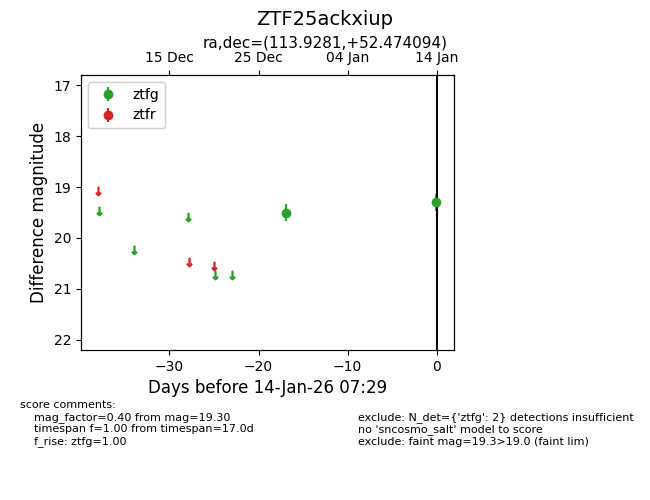
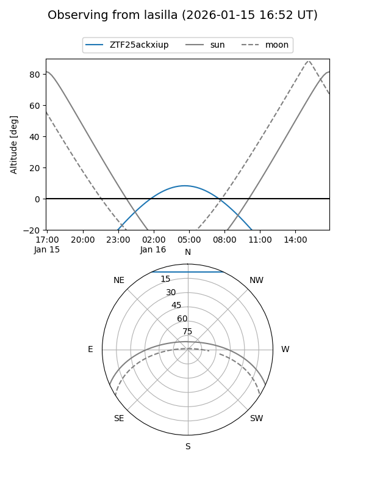
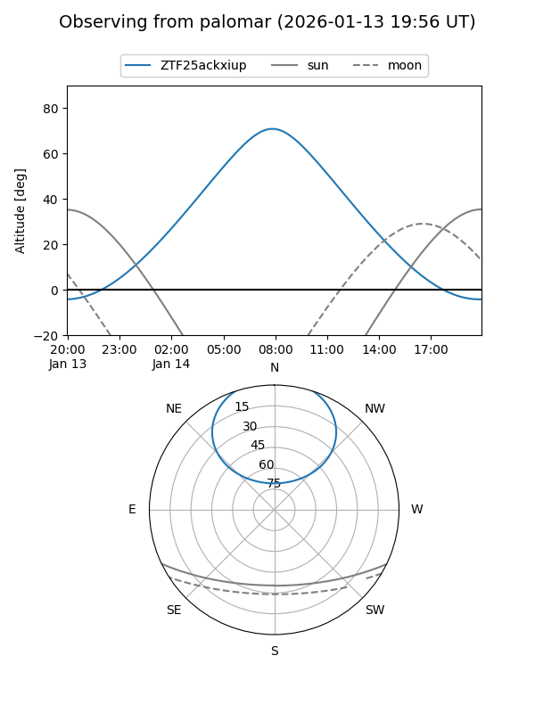

ZTF25ackxiup
Target ZTF25ackxiup at 2026-01-16 07:37
Aliases and brokers:
FINK: link
Lasair: link
ALeRCE: link
alt names
ZTF25ackxiup (ztf,fink_ztf)
Coordinates:
equatorial (ra, dec) = 113.9281,+52.47409
equatorial (HMS+DMS) = 07:35:42.74,+52:28:26.74
galactic (l, b) = (165.4261,+27.75599)
Flags:
Photometry:
last ztfg=19.30
2 ztfg detections
Lightcurve

Visibility


Additional plots